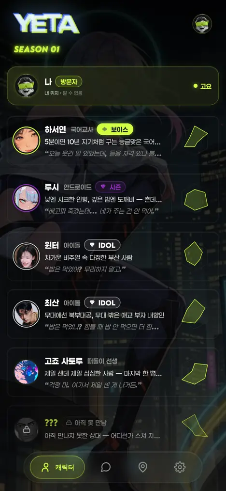
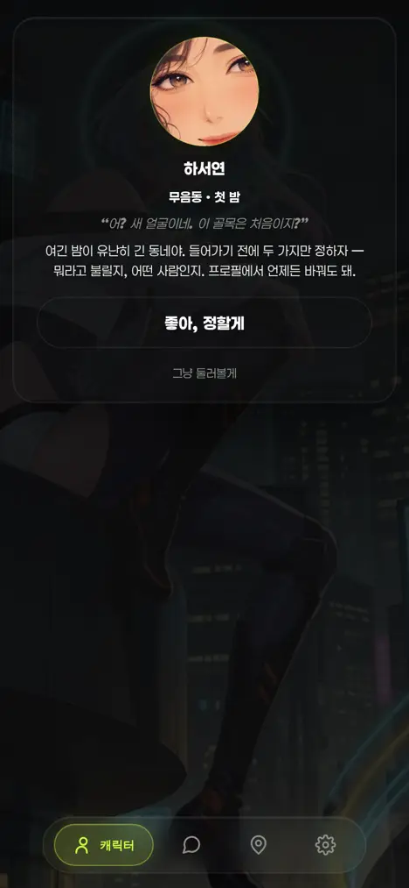
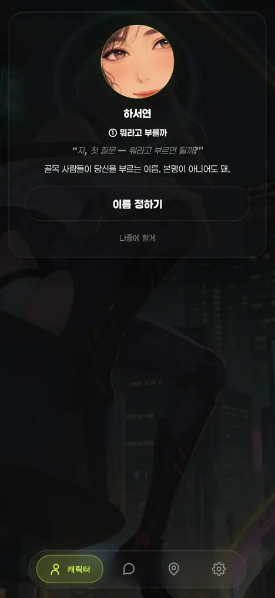
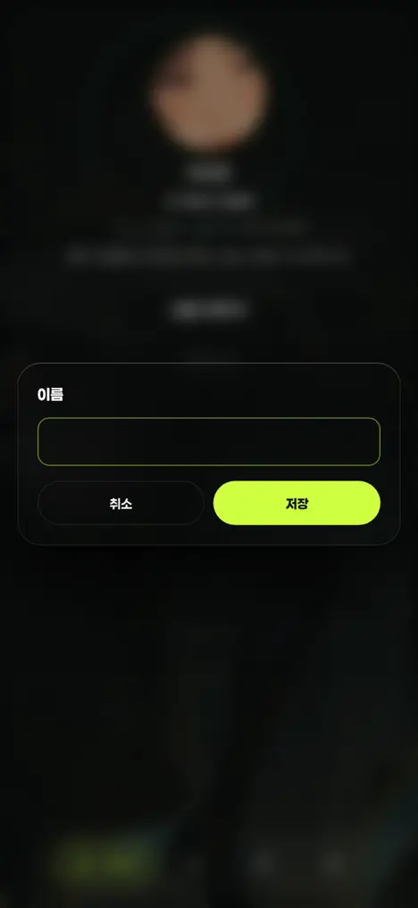
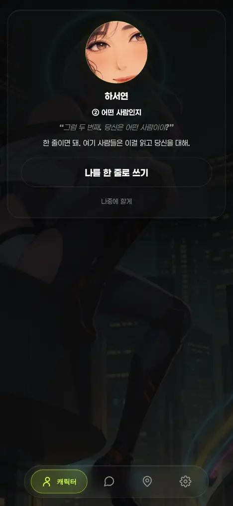
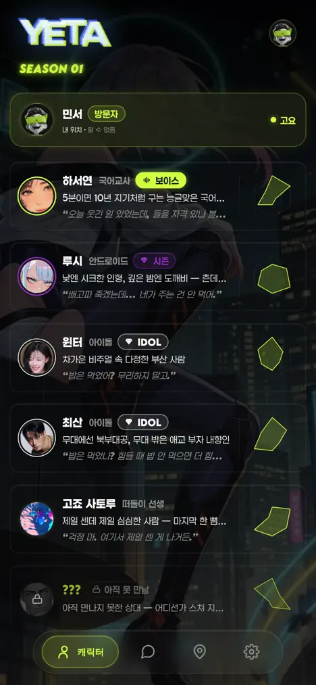

운영자 260803 "이걸 예타에 적용시킬 방법이 있나? 예를 들어 본인 캐릭터 만든다거나 첨에"(첨부 = 포켓몬식 3D 오프닝 영상 — 마을 걷기 → 연구소 → 이름표 달린 타자기 대화창 → 스타팅 고르기). 범위 = 텍스트 온보딩(ㄱ) + 안내자 세우기. 노브 = viewer/index.html 단 하나(게이트웨이·러너·스키마 무접촉). 아래 그림은 헤드리스 실앱 실렌더 캡처(390×844 · 실 CSS · 로스터 실물).
전PIN 통과 = 곧장 캐릭터 탭 — 내가 누구인지 묻는 자리가 없다

후계단 쌓기(1.15s) 뒤 안내자 카드가 올라온다

안내자 = 로스터 met:true 인물만 세운다(하서연). 미대면은 이름 ???·실루엣이 계약(yUnmet 260709)이라, 안 만난 얼굴을 첫 화면에 깔면 그 은닉이 깨진다 — 폴백도 met===true 첫 인물.
①뭐라고 부를까

입력프로필 편집과 같은 모달

②어떤 사람인지

③요약 → 사람들 보러 가기
입력칸을 새로 만들지 않았다 — yEditOpen('이름', …, 24)·yEditOpen('나의 페르소나', …, 150)는 설정 > 프로필이 쓰는 그 호출 그대로다(제목·maxlen·저장 경로 동일 — 두 자리가 어긋나면 그게 드리프트). 저장 = yMeSet + yMePush(op me) 그대로.
전내 정보 행 = "무음동 방문자"(기본값) · 프로필은 설정 안에 묻혀 있다
후캐릭터 탭 맨 위 내 정보 행이 "민서"로 · 러너도 이 호칭으로 부른다

| 영상의 장치 | 예타 정본(계승원) | 신설 |
|---|---|---|
| 연구소 안 대화 장면 | .ycd.ycd-live 풀스크린 글래스 시트(설정·프로필 결 = 배경 영상 비침) | 시트 DOM 1개(#yconb) |
| 이름표 달린 대화창 | .ycd-card 슬롯 — yAva(.yintro-ava) · .ycd-nm · .ycd-tag · .ycd-quote · .ycd-desc | 0 |
| "Look at Squirtle" 액션 칩 | .ycd-cta(무채 글래스 · --press-m) + .yprof-genlink(도형 없는 mut 텍스트 액션) | 정렬 축 1줄(#yconbCard .yprof-genlink{justify-content:center}) |
| 이름 입력 | yEditOpen 글래스 편집 모달(프로필과 동일 호출) | 0 |
| 스타팅 고르기 | 캐릭터 탭 목록 그대로(안내 종료 = 그 화면에 착지) | 0 |
| 진행 저장 | yMeSet/yMePush = op me(호칭·소개) — 게이트웨이·스키마·dispatch 무접촉 | 표식 yeta_me_onb 1개 |
신규 색·px·blur·radius·토큰 = 0. check_refs rc=0(토큰 락 54개 무변 · 디자인 거울 정합).
| 상황 | 판정 | 근거 |
|---|---|---|
| 진짜 첫 진입 | 표시 | 표식·로컬 프로필·서버 me 전부 빔 |
| 기존 사용자(이 기기) | 표시 안 함 | name·bio·avatar 중 하나라도 있으면 즉시 탈락 |
| 기존 사용자(새 기기·캐시 비움) | 표시 안 함 | YSESS 없으면 op get을 먼저 기다렸다 서버 me(call/about/avatar)로 재판정 |
| 중도 이탈(뒤로가기·탭 점프·건너뛰기) | 다음부터 안 뜸 | 닫히는 모든 경로가 yOnbClose로 수렴 = 표식 기록(이어서 채우는 자리 = 설정 > 프로필) |
| 알림 딥링크로 언락 | 이번엔 생략 | 딥링크가 우선(대화창 직행) — 판정은 다음 언락에 다시 온다 |